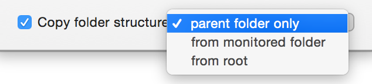
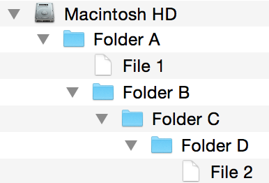
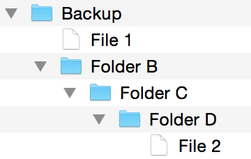

Copying folder structure
Certain actions, such as Move, Copy and Upload, have an option to copy the folder structure. This allows you to carry over some of the folder structure from the source to the destination, which can be useful for mirroring the folder structure.
You can find the options by clicking on the action's options button. By default, this option is not enabled and no folder structure is copied over. In such a case, if copying file A from folder 1 to folder 2, file A would appear directly in folder 2. When enabled, you have three options:

- parent folder only
- from monitored folder
- from root
These options are best explained by example. If we take a folder structure like the following:

For the purposes of this example, Folder B is the folder Hazel is monitoring and the rules are set up such that Hazel will descend into any subfolders.
If processing File 1, it will be copied/moved/uploaded underneath the destination as follows:
- parent folder only: Folder B
- from monitored folder: directly in the destination folder (there are no folders in between File 1 and the monitored folder)
- from root: Macintosh HD ▸ Folder A ▸ Folder B ▸
If processing File 2, it will be copied/moved/uploaded underneath the destination as follows:
- parent folder only: Folder D
- from monitored folder: Folder C ▸ Folder D ▸
- from root: Macintosh HD ▸ Folder A ▸ Folder B ▸ Folder C ▸ Folder D ▸
So, if we are copying files to a folder called Backup and using the "from monitored folder" option, we would end up with a folder structure as follows:

Here, you can see that by getting the path up to the monitored folder, we get everything below Folder B. By using the folder structure option in this way, you can mirror folder trees.